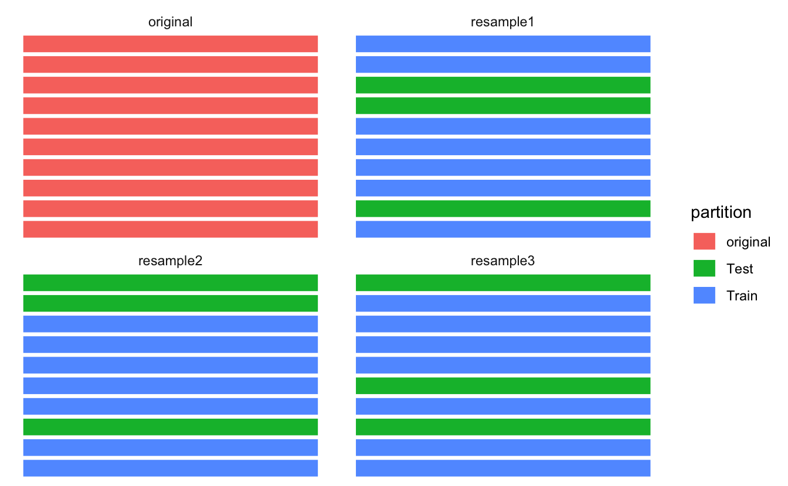

Kapitel 8 tidymodels 2
8.1 Resampling
Vergleichen Sie die drei Fälle, die sich in der Nutzung von Train- und Test-Sample unterscheiden:
- Wir fitten ein Klassifikationsmodell in einer Stichprobe, sagen die Y-Werte dieser Stichprobe “vorher”. Wir finden eine Gesamtgenauigkeit von 80%.
- Wir fitten ein Klassifikationsmodell in einem Teil der ursprünglichen Stichprobe (Train-Sample) und sagen Y-die Werte im verbleibenden Teil der ursprünglichen Stichprobe vorher (Test-Sample). Wir finden eine Gesamtgenauigkeit von 70%.
- Wir wiederholen Fall 2 noch drei Mal mit jeweils anderer Zuweisung der Fälle zum Train- bzw. zum Test-Sample. Wir finden insgesamt folgende Werte an Gesamtgenauigkeit: 70%, 70%, 65%, 75%.
Welchen der drei Fälle finden Sie am sinnvollsten? Warum?
8.2 Illustration des Resampling
Abb. 8.1 illustriert die zufällige Aufteilung von \(n=10\) Fällen der Originalstrichprobe auf eine Train- bzw. Test-Stichpobe. In diesem Fall wurden 70% der (10) Fälle der Train-Stichprobe zugewiesen (der Rest der Test-Stichprobe); ein willkürlicher, aber nicht unüblicher Anteil. Diese Aufteilung wurde drei Mal vorgenommen, es resultieren drei “Resampling-Stichproben”.

Figure 8.1: Resampling: Eine Stichprobe wird mehrfach (hier 3 Mal) zu 70% in ein Train- und zu 30% in die Test-Stichprobe aufgeteilt
Es gibt eine Reihe vergleichbarer Illustrationen in anderen Büchern:
- Timbers, Campbell & Lee, 2022, Kap. 6
- Silge & Kuhn, 2022, Abb. 10.1
- Silge & Kuhn, 2022, Abb. 10.2
- Silge & Kuhn, 2022, Abb. 10.3
- James, Witten, hastie & Tishirani, 2021, Abb. 5.3
{kind=link}
{kind=link}
{kind=link}